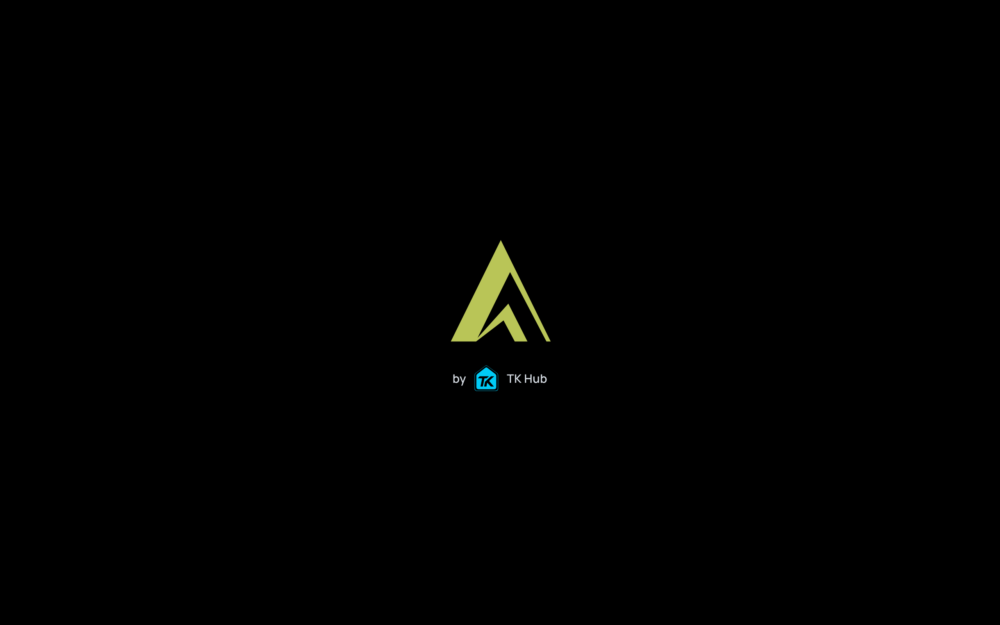
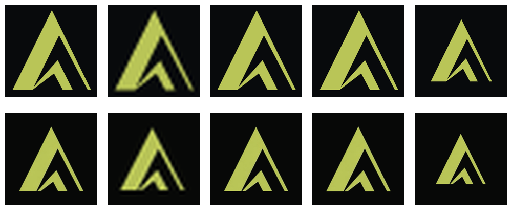

APEX: sharp logos everywhere, one splash, no added delay
Terrell's urgent order, Nov 13–14. Full site snapshot with the new icons: apex-1114.
1. One splash screen (was two)
Before: APEX logo 0.6 s, then a TK Hub screen 1 s, then a fade, on every page load (about 1.8 s added each visit). Now: one screen, APEX large with “by TK Hub” and the small TK Hub mark. It goes away the moment the page is ready, with no minimum time. The logos only appear if loading takes longer than 0.25 s, so fast and cached loads never show it, and reload/back skip it. Measured on the production build: fast load ready at ~0.24 s with no logo shown; throttled slow load ready at ~1.3 s.

The Android and iPhone apps get the same single screen (sharp marks), ending when sign-in or the first desk is on screen instead of on a timer. That reaches phones with the next store builds.
1b. TK Hub logo master
Every TK Hub logo in APEX now uses Terrell's TK Hub master (faithful vector rebuild, same look): the site header mark, “by TK Hub” on the splash above, and the Android and iPhone launch screens. Header at 3x phone resolution:
2. Icons: favicon, apple-touch, install icons
Top row: new sharp set (from the exact APEX vector). Bottom row: the soft icons they replace (kept in the repo). Left to right: apple-touch 180, favicon 32, install 192, install 512, maskable 512.

3. Header logo
The header mark is now the vector (apex-mark.svg), crisp at any screen density. Shown at 3x phone resolution:

4. Link preview card (og:image + twitter:image, 1200×630)
Same layout and photo; the logo is now drawn from the vector and the text is crisp. twitter:image is now sent too.